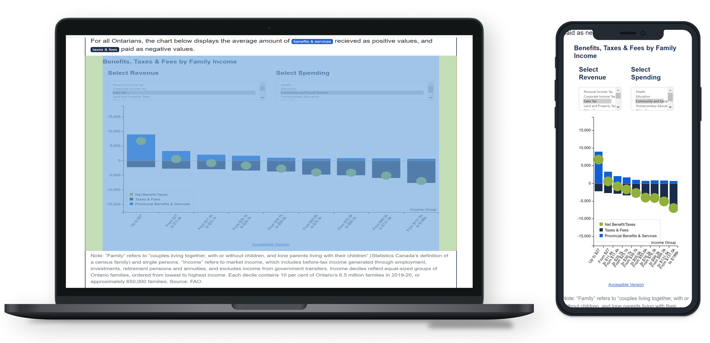
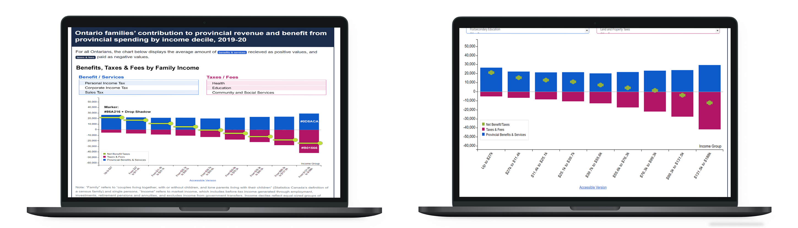

Brainstorming
Features & User Needs
As directed by the communications lead, the interactive graph was to be created and it needed to have these main features:
- The ability to select and display the different contribution and benefits categories.
- A responsive graph; Whatever the user selected should be reflected in the graph.
- An overall visual appealing and easy to use product; It should be easy for the user to understand how the graph works and how to use it.
Accessibility
Another important thing to consider was the flexibility across different browsers and devices. The FAO reaches a wide audience which means the illustrator would be viewed on a wide array of browsers and devices. It has to be ensured that all users would be able to view and interact with the graph.
Prototypes
Once the initial features were decided and implemented, the Distribution Illustrator went through a number of iterations.
This is what one of the first iterations looked like. The main things that were pointed out to change by the
lead graphic designer and I were the colours, font, and size of the green markers.

On mobile, the graph looked squished so some of
the text overlapped, the markers were too large, and the use of the darker blue wasn't eyecatching. The graph was also smaller compared to the rest of
the page on desktop.
Here, in a later mockup we changed the dark blue to pink and tested out a different version of the green marker.
The colour change made the graph overall more eyecatching and bright. We also colour coded the Benefits and Taxes text so it's clear for users what the data
they're looking at is.

The graph legend was also placed in the graph originally which did look cramped.
User Feedback and Testing
After these intial prototypes and we got approval from the communications lead, we began user testing.
Members from the Communications and Financial teams were asked to test the illustrator and provide
feedback regarding any glitches and how well it fulfilled user needs.
Key Findings
- Some features need to be simplified; The user is able to select multiple options but that seemed to be too complex.
- The marker is fine as a circle, the size just need to be adjusted
- Need to keep accessbility standards in mind. Some of the text was too small or cramped on mobile versions.